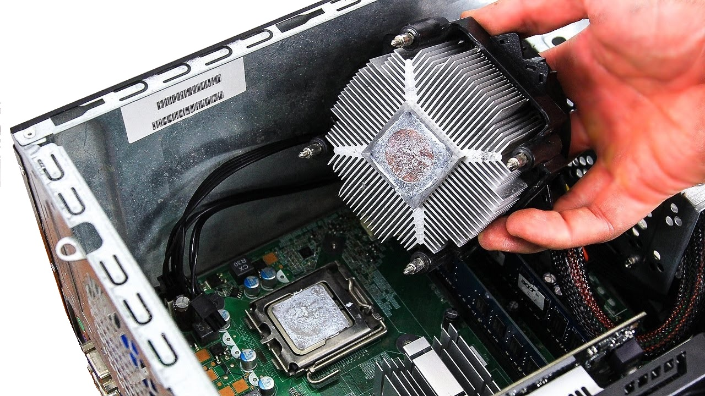

Run Clean
Run CleanWhat We Do
Workplace Computer cleaning and preventive maintenance
In the modern workplace PCs are a significant investment for any enterprise and proper maintenance of existing resources can extend the life of theses resources resulting in significant savings in the long run.
We will take a detailed inventory of all existing computers and judge the level of cleaning or maintenance that would be the most benefit. It is likely that computers acquired within the last year will not require any cleaning or maintenance, and computers acquired in the last three years will require cleaning but not maintenance. The audit summary will be made available to the customer for future reference.
Thorough dust removal of all computers
Dust buildup can cause problems for every system. By blocking the intake/exhaust vents, slowing down the fans and clogging up the heatsinks, dust buildup is the quickest way to damage your system over time. Removing dust from the PCs in a work environment has the added benefit of taking dust out of the circulation of the work environment.


Thermal paste replacement
For computers over three years old, replacing the thermal paste can improve cooling of the processor and therefore improve the computers performance. Lowering the average temperature within the processor will allow the computer to stay in use longer and reduce IT spending in the future.
